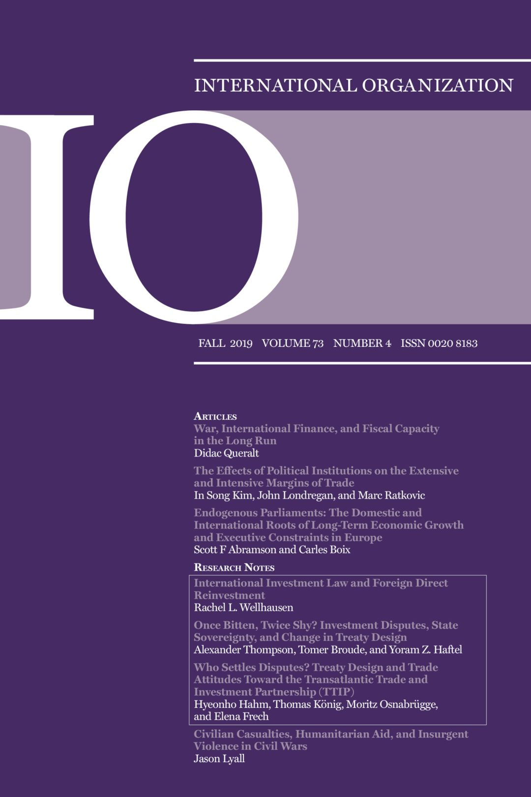

收录于合集 #新刊速递 123个
期刊简介

International Organization （《国际组织》），简称“IO”，是一份经过同行评议的季刊，涵盖国际事务的领域包括：外交政策、国际关系、国际与比较政治经济学、安全政策、环境争端与解决、欧洲一体化、联盟模式与战争、谈判与冲突解决、经济发展与调整、国际资本流动等。它成立于1947年，由剑桥大学出版社代表国际组织基金会出版，主编是乔治城大学的Erik Voeten。根据Journal Citation Reports显示，2018年IO杂志影响因子为4.508，在91个国际关系类期刊中排名第一（1/9），在176个政治科学类期刊中排名第一（1/176）
本期编译
【编译】胡贺 李雯珲 周心培 缪高意 邢戎
【校对】李雯珲 兰星辰 虞敷扬 胡贺 朱文菡
本期目录
1. 战争、国际金融与财政能力 的长期分析
War, International Finance, and Fiscal Capacity in the Long Run
2. 政治制度对贸易的广延和集约边际的影响
The Effects of Political Institutions on the Extensive and Intensive Margins of Trade
3. 内源性议会：欧洲长期经济增长和行政约束的国内和国际根源
Endogenous Parliaments: The Domestic and International Roots of Long-Term Economic Growth and Executive Constraints in Europe
4. 国际投资法与外国直接投资
International Investment Law and Foreign Direct Reinvestment
5. 一朝被蛇咬，十年怕井绳？投资争端、国家主权与条约设计的改变
Once Bitten, Twice Shy? Investment Disputes, State Sovereignty, and Change in Treaty Design
6. 谁来解决争端？跨大西洋贸易与投资伙伴协定的条约设计和贸易态度 **** Who Settles Disputes? Treaty Design and Trade Attitudes Toward the Transatlantic Trade and Investment Partnership (TTIP)
7. 内战中的平民伤亡、人道主义援助与暴力起义
Civilian Casualties, Humanitarian Aid, and Insurgent Violence in Civil Wars
摘要译文
1.
战争、国际金融与财政能力 的长期分析
【题目】 War, International Finance, and Fiscal Capacity in the Long Run ****
【作者】 Didac Queralt （耶鲁大学）
【摘要】 本文通过关注两种主要的战争融资类型：税收和外国贷款，重新审视现代战争和国家建设的关系。用税收资金为战争筹资，可提高财富评估和合规监测的能力，即财政能力。通过税收融资的战争促使国家采用权力共享机制，这就将税收转变为非零和博弈，战争产生了长远的影响。对于通过外部资本（外国贷款）进行的战争融资来说，借款人可能突然中断偿债，作为违约解决方案的一部分，战争债务免除或交换为非税收入，则用外部资本融资战争对长期财政能力来说毫无裨益。作者研究了1816年之后的世界各地战争。研究结果表明，十九世纪资本市场的全球化破坏了战争、国家建设与政治改革之间的联系。
In this article I revisit the relationship between war and state making in modern times by focusing on two prominent types of war finance: taxes and foreign loans. Financing war with tax money enhances the capacity to assess wealth and monitor compliance, namely fiscal capacity. Tax-financed war facilitates the adoption of power-sharing institutions, which transform taxation into a non-zero-sum game, carrying on the effect of war in the long run. Financing war with external capital does not contribute to long-term fiscal capacity if borrowers interrupt debt service and, as part of the default settlement, war debt is condoned or exchanged for non tax revenue. The empirical evidence draws from war around the world as early as 1816. Results suggest that globalization of capital markets in the nineteenth century undermined the association between war, state making, and political reform.
【编译】胡贺
【校对】李雯珲
2.
政治制度对贸易的广延和集约边际的影响
【题目】 The Effects of Political Institutions on the Extensive and Intensive Margins of Trade
【作者】 In Song Kim（麻省理工学院政治学系副教授），JohnLondregan（普林斯顿大学伍德罗·威尔逊学院政治学与国际事务教授），Marc Ratkovic（普林斯顿大学政治学系副教授）
【摘要】
本文建立了一个结合了贸易伙伴的选择（广延边际）和贸易额（集约边际）的政治网络模型。该模型预测，安全的政体，包括民主政体和一些巩固的威权政体，将比脆弱的威权政体更多地在广延边际进行贸易，而脆弱的威权政体将阻碍扩大公民之间人际接触的产品贸易。然后，本文用两阶段贝叶斯LASSO方法估计了制度的详细特征，并分析了半个多世纪以来涵盖131个国家的高度分散的产品级贸易数据。与前述模型一致，作者发现：（a）政治制度对贸易的广延边际有影响，但对集约边际没有影响；（b）政治制度对广延边际的影响因产品而异，其中最主要的是涉及广泛的人际交往的产品。
We present a model of political networks that integrates both the choice of
trade partners (the extensive margin) and trade volumes (the intensive
margin). Our model predicts that regimes secure in their survival, including
democracies as well as some consolidated authoritarian regimes, will trade
more on the extensive margin than vulnerable autocracies, which will block
trade in products that would expand interpersonal contact among their
citizens. We then apply a two-stage Bayesian LASSO estimator to detailed
measures of institutional features and highly disaggregated product-level
trade data encompassing 131 countries over a half century. Consistent with our
model, we find that (a) political institutions matter for the extensive margin
of trade but not for the intensive margin and (b) the effects of political
institutions on the extensive margin of trade vary across products, falling
most heavily on goods whose marketing involves extensive interpersonal
contact.
【编译】李雯珲
【校对】兰星辰
3.
内源性议会： 欧洲长期经济增长和行政约束的国内和国际根源
【题目】 Endogenous Parliaments: The Domestic and International Roots of Long-Term Economic Growth and Executive Constraints in Europe
【作者】 Scott F Abramson（罗切斯特大学政治学系副教授），Carles Boix（普林斯顿大学政治与公共事务教授）
【摘要】 对行政行为的制度约束通常被认为是限制国家攫取、保护产权和促进经济发展的重要宪政特征。结合新的全体欧洲大陆议会的存在约束数据和城市大小的数据，本文依据内生性经济增长理论表明欧洲历史上1200年到1900年的经济和政治发展路径是一般的城市聚集过程的结果。证据表明，作为因变量的约束制度和增长的存在都是由初始条件所驱动的，这些初始条件孕育了在城市居住的工匠的技术技能，而这些工匠反过来又能够对统治者行为施加制度限制。因此，议会制约不是发展的根本原因，恰恰相反，它是由内生性增长进程所决定的。 Institutional constraints on executive behavior are commonly understood to be crucial constitutional features that limit state expropriation, protect property rights, and promote economic development. Combining new data describing the presence of parliamentary constraints for the entire European continent with data on city sizes, we build upon theories of endogenous economic growth to demonstrate that paths of both economic and political development over the long span of European history from 1200 to 1900 are the consequence of a common process of urban agglomeration. In doing so, we provide evidence that both outcomes—the existence of constraining institutions and growth—are driven by initial conditions that fostered technical knowhow embodied in urban-dwelling artisans who, in turn, were able to force institutional limits on rulers’ actions. Hence, instead of reflecting a true underlying cause of development, parliamentary constraints are themselves outcomes determined by an endogenous process of growth.
【编译】李雯珲
【校对】兰星辰
4.
国际投资法与外国直接投资
【题目】 International Investment Law and Foreign Direct Reinvestment
【作者】 Rachel L Wellhausen, 德克萨斯大学奥斯汀分校助理教授
【摘要】 法律的目标之一在于，提供一种手段，使争端各方回到合作中来。人们普遍预期，国际投资法一般不会这样做；相反，外国投资者一旦受害，其最后手段往往是起诉东道国，并撤资。我使用投资者与国家争端解决（ISDS）仲裁和公司层面双边投资的新数据库发现，事实上，索赔投资者至少有百分之三十一的时间（1990年至2015年）在东道国进行再投资。在提交仲裁的投资者中，如保持领域不变，则再投资的重要相关因素包括申请人的法律策略、申请人的不满和成功程度，以及仲裁后诉讼的发生率。尽管事实上的国际投资制度在体制设计上有其独特之处，但它可以帮助解决东道国时间不一致问题，且方式符合法律的标准预期。再投资的可能性是否足以强化东道国对这一有争议的制度的承诺，这个问题悬而未决。 One goal of the law is to provide a means to return disputing parties to cooperation. The prevailing expectation is that international investment law largely does not do this; rather, an aggrieved foreign investor sues the host state as a last resort and divests. I use a new database of Investor-State Dispute Settlement (ISDS) arbitrations and firm-level bilateral investment to show that, in fact, claimant investors reinvest in the host state at least 31 percent of the time (between 1990 and 2015). Among investors who file for arbitration, and controlling for sector, important correlates of reinvestment include the claimant’s legal strategy; the extent of the claimant’s grievance and success; and the incidence of post-arbitration litigation. Despite unique aspects of its institutional design, the de facto international investment regime can help solve host state time-inconsistency problems consistent with standard expectations of law. Whether the probability of reinvestment is high enough to reinforce host state commitments to this controversial regime is an open question.
【编译】周心培
【校对】虞敷扬
5. ****
一朝被蛇咬，十年怕井绳？投资争端、国家主权与条约设计的改变
【题目】 Once Bitten, Twice Shy? Investment Disputes, State Sovereignty, and Change in Treaty Design
【作者】 Alexander Thompson，俄亥俄州立大学助理教授; Tomer Broude，希伯来大学助理教授; Yoram Z Haftel，希伯来大学助理教授
【摘要】 三千多个国际投资协议（IIA）在东道国内为外国投资者提供了充足的保护，并为其提供了具有约束力的投资者与国家间争端解决机制（ISDS）。近年来，各国愈发渴望重新谈判和终止条款，以改变其条约承诺，迄今为止，已有约300个国际投资协定受到影响。人们普遍认为，这种情势表明，该机制再次受到各国的抵制，也反映出各国政府正尝试收回主权，这种情势顺应了更广泛的反全球化浪潮。我们利用有关国际投资协议条款限制国家监管空间（SRS）程度的新数据，首次系统地研究了ISDS经验如何影响国家调整条约的决策。实证分析表明，国家如果收到投资者的索赔要求，要么会选择重新谈判投资协议，索求更大的自主监管权，要么就会选择终止协议。但是，这种影响随参与ISDS的性质以及条约条款的不同而不同。 More than 3,000 international investment agreements (IIAs) provide foreign investors with substantive protections in host states and access to binding investor-state dispute settlement (ISDS). In recent years, states increasingly have sought to change their treaty commitments through the practices of renegotiation and termination, so far affecting about 300 IIAs. The received wisdom is that this development reflects a “backlash” against the regime and an attempt by governments to reclaim sovereignty, consistent with broader antiglobalization trends. Using new data on the degree to which IIA provisions restrict state regulatory space (SRS), we provide the first systematic investigation into the effect of ISDS experiences on state decisions to adjust their treaties. The empirical analysis indicates that exposure to investment claims leads either to the renegotiation of IIAs in the direction of greater SRS or to their termination. This effect varies, however, with the nature of involvement in ISDS and with respect to different treaty provisions.
【编译】周心培
【校对】虞敷扬
6. ****
谁来解决争端？ 跨大西洋贸易与投资伙伴协定 的条约设计和贸易态度
【题目】
Who Settles Disputes? Treaty Design and Trade Attitudes Toward the Transatlantic Trade and Investment Partnership (TTIP)
【作者】
Hyeonho Hahm（曼海姆大学）Thomas König（曼海姆大学）Moritz Osnabrügge（伦敦政治经济学院）Elena Frech（日内瓦大学）
【摘要】 公众愿意接受哪种贸易协定？我们认为，相较于把重点放在个人对市场准入和贸易壁垒的关切上，具体的条约设计，特别是争端解决机制特点，在塑造公众对贸易协定的支持方面发挥着关键作用。为检验这一理论预期，我们基于一个德国涵盖全国代表性的样本开展联合实验。该实验改变多个条约设计要素，并评估对跨大西洋贸易与投资伙伴协定（TTIP）多个维度的公众偏好。我们发现，与其他选择相比，私人仲裁即投资者与国家间争端解决（ISDS）产生了针对贸易协定的强烈异议。作为最重要的一个因素，争端解决特征的这种影响在个人的关键属性（包括技能水平、信息和民族情绪等）中影响显著且具有持续性。
What type of trade agreement is the public willing to accept? Instead of focusing on individual concerns about market access and trade barriers, we argue that specific treaty design and, in particular, the characteristics of the dispute settlement mechanism, play a critical role in shaping public support fortrade agreements. To examine this theoretical expectation, we conduct a conjoint experiment that varies diverse treaty-design elements and estimate preferences over multiple dimensions of the Transatlantic Trade and Investment Partnership (TTIP) based on a nationally representative sample in Germany. We find that compared to other alternatives, private arbitration, known as investor-state dispute settlement (ISDS), generates strong opposition to the trade agreement. As the single most important factor, this effect of dispute settlement characteristic is strikingly large and consistent across individuals’ key attributes, including skill levels, information, and national sentiment, among others.
【编译】 缪高意
【校对】 胡贺
7. ****
内战中的平民伤亡、人道主义援助与暴力起义
【题目】
Civilian Casualties, Humanitarian Aid, and Insurgent Violence in Civil Wars
【作者】
Jason Lyall（美国达特茅斯学院）
【摘要】 对平民的无差别暴力长期被视为内战中新一轮暴力的催化剂。那么人道主义援助能否在平民伤亡事件发生后减少暴力行为？答案并不乐观，跨国研究显示人道主义援助和内战暴力、致死率和持续时间的增长之间存在关联。但迄今为止，对战时援助与战后暴力的次国家层面研究甚是缺乏。为检验这一关系，本文借鉴了美国国际开发署资助的阿富汗平民援助计划（ACAP II）的相关数据，该计划调查了2011至2013年间1061起平民伤亡事件，其中约有一半（55.8%）的伤亡事件受到了随机的援助。这有助于进行反事实评估，以研究援助是如何影响塔利班武装对国际安全援助部队、阿富汗部队和平民进行的攻击。本文的发现挑战了既有研究：在援助之后的两年时间里，塔利班武装对国际安全援助部队的攻击平均减少23%，但针对阿富汗部队或平民的暴力行为没有减少。Indiscriminate violence against civilians has long been viewed as a catalyst for new rounds of violence in civil wars. Can humanitarian assistance reduce violence after civilians have been harmed? Crossnational studies are pessimistic, drawing a connection between humanitarian aid and increased civil war violence, lethality, and duration. To date, however, we have few subnational studies of wartime aid and subsequent violence. To examine this relationship, I draw on the Afghan Civilian Assistance Program (ACAP II), a USAID-funded initiative that investigated 1,061 civilian casualty incidents (2011–13). Aid was assigned as if randomly to about half (55.8%) of these incidents, facilitating counterfactual estimation of how assistance affected Taliban attacks against the International Security Assistance Force, Afghan forces, and civilians. Challenging prior studies, I find that ACAP was associated with an average 23 percent reduction in attacks against ISAF, but not Afghan forces or civilians, at the village level for up to two years after the initial incident.
【编译】邢戎
【校对】朱文菡
获取本期 英文版原文 请留意本期 留言板！
扫下方二维码查看往期精彩
【重磅预告】国政学人推出顶级期刊学术动态速递！
【新刊速递】第01期 | Review of International Studies Vol.45, No.4,
2019【新刊速递】第02期
| International Relations Vol.33, No.3,
2019
【新刊速递】第03期 | International Organization Vol.73, No.3,
2019
【新刊速递】第04期 | World Politics, Vol.71, No.4,
2019
【新刊速递】第05期 | European Journal of International
Relations
【新刊速递】第06期 | Security Studies, Vol.28, No.4,
2019
【新刊速递】第07期 | International Security, Vol 44, No. 2,
2019
【新刊速递】第08期 | Cambridge Review of International
Affairs,Vol.32,No.4
【新刊速递】第09期 | International Relations of Asia-Pacific
Vol.19,No.3
【新刊速递】第10期 | International Studies Review, Volume.21, No.3,
2019
【新刊速递】第11期 | Cooperation and Conflict, Vol. 54, No. 4,
2019【新刊速递】第12期
| International Affairs, Vol.95,
No.6，2019
【新刊速递】第13期 | Chinese Journal of International Politics, No.4,
2019【新刊速递】第14期
| Chinese Journal of International Politics, No.3,
2019

国政学人
支持学术公益与知识传播
微信扫一扫赞赏作者 __赞赏
已喜欢，对作者说句悄悄话
取消 __
发送给作者
发送
最多40字，当前共字
上一页 1/3 下一页
长按二维码向我转账
支持学术公益与知识传播
受苹果公司新规定影响，微信 iOS 版的赞赏功能被关闭，可通过二维码转账支持公众号。